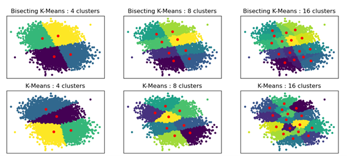
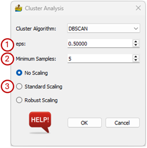
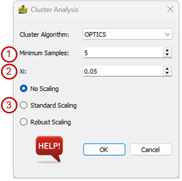
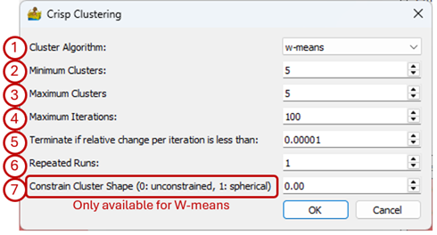
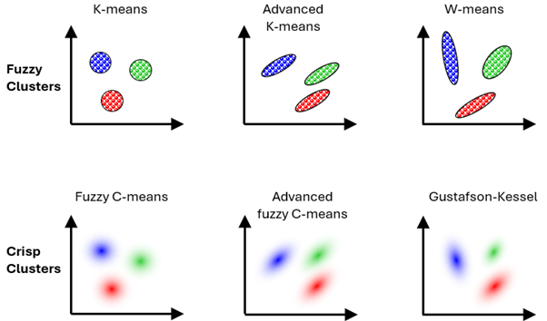
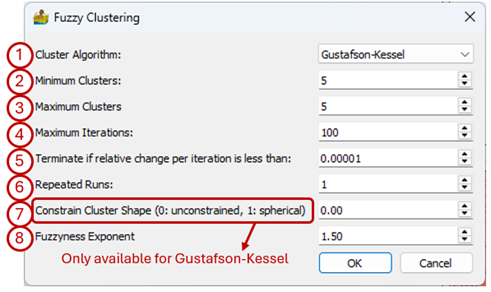
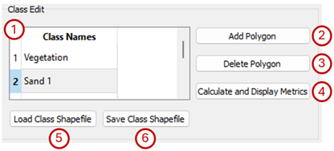
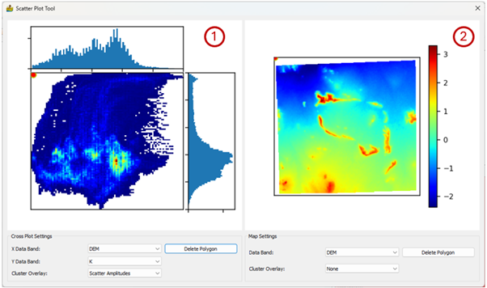
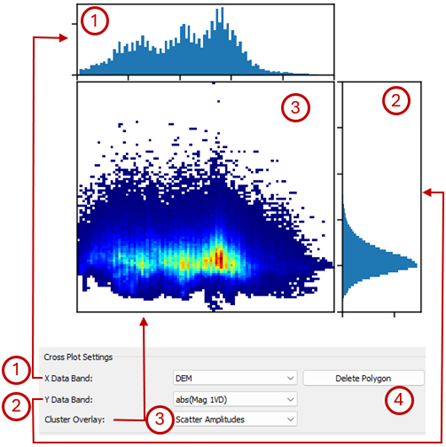
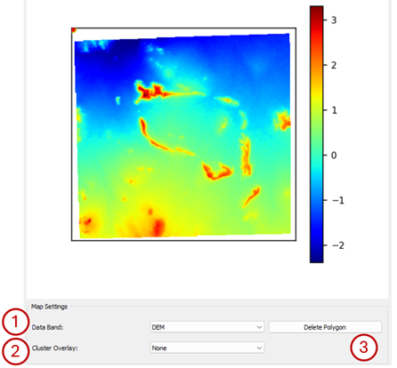

Classification: Description of Modules¶
Cluster Analysis¶
The tool uses clustering methodologies implemented by the scikit-learn team and detailed information on the algorithms can be found on their website (https://scikit-learn.org). This clustering is unsupervised, meaning that a multiple band dataset is supplied, and regions of the dataset is automatically grouped into classes.
Six clustering algorithms are available and the options on the Cluster Analysis dialog box vary depending on the selected algorithm:
Mini Batch K-means(fast)
K-means
Bisecting K-means
DBSCAN
OPTICS
Birch
The three K-means algorithms have the same options:
Cluster Algorithm – Choose between Mini Batch K-means (fast), K-means and Bisecting K-means. The difference between the K-means and Bisecting K-means results are shown below.
Minimum Clusters – Clustering can be done for a specific number of clusters or for a range of clusters. This option sets the minimum number of clusters that will be generated.
Maximum Clusters – The maximum number in the range of clusters that will be generated. For example, if the minimum number of clusters is 5, and the maximum number of clusters is 7, then 3 interpretations are produced, namely one with 5 classes, one with 6 classes and one with 7 classes.
Maximum iterations – Maximum number of iterations to use when generating a solution.
Tolerance – Refers to the relative tolerance with regards to inertia to declare convergence and stop iterating. When the relative decrease in the objective function between iterations is less than the given tolerance value, this results in the stopping of the iterations.
Scaling – The data can be scaled as a preprocessing step. The three options are:
No Scaling – The input data are used as is.
Standard Scaling - Standardize features by removing the mean and scaling to unit variance.
Robust Scaling – Scale features using statistics that are robust to outliers.


The options for the DBSCAN (Density-Based Spatial Clustering of Applications with Noise) algorithm are:
eps – The maximum distance between two samples for them to be considered as in the same neighbourhood.
Minimum samples –The number of samples (or total weight) in a neighbourhood for a point to be considered as a core point. This includes the point itself.
Scaling – The data can be scaled as a preprocessing step. The three options are:
No Scaling – The input data are used as is.
Standard Scaling - Standardize features by removing the mean and scaling to unit variance.
Robust Scaling – Scale features using statistics that are robust to outliers.

Options for the OPTICS (Ordering Points To Identify the Clustering Structure) algorithm are:
Minimum samples – The number of samples (or total weight) in a neighbourhood for a point to be considered as a core point. This includes the point itself.
Xi – The minimum reachability steepness that defines a cluster boundary.

Options for the Birch algorithm are:
Minimum Clusters – Clustering can be done for a specific number of clusters or for a range of clusters. This option sets the minimum number of clusters that will be generated.
Maximum Clusters – The maximum number in the range of clusters that will be generated. For example, if the minimum number of clusters is 5, and the maximum number of clusters is 7, then 3 interpretations are produced, namely one with 5 classes, one with 6 classes and one with 7 classes.
Tolerance – The radius of the subcluster obtained by merging a new sample and the closest subcluster should be less than the threshold otherwise a new subcluster is started. Setting this value to be very low promotes splitting and vice-versa.
Branching Factor – Maximum number of Clustering Feature subclusters in each node. If a new sample enters such that the number of subclusters exceed the branching factor then that node is split into two nodes with the subclusters redistributed in each. The parent subcluster of that node is removed and two new subclusters are added as parents of the two split nodes.
Scaling – The data can be scaled as a preprocessing step. The three options are:
No Scaling – The input data are used as is.
Standard Scaling – Standardize features by removing the mean and scaling to unit variance.
Robust Scaling – Scale features using statistics that are robust to outliers.

Crisp Clustering¶
This module provides a few additional clustering methods (Paasche and Eberle, 2009). It does not use algorithms from scikit-learn. The clustering is unsupervised, meaning that a multiple band dataset is supplied, and regions of the dataset is automatically grouped into classes.
Different ways of defining these classes are available. The simplest is k-means where the classes are circular or spherical in shape. In advanced k-means the classes can be ellipsoids, but they must be parallel to each other, while in w-means, they can be ellipsoids and they don’t have to be parallel to each other.
The options available for Crisp Clustering are:
Cluster Algorithm – This can be k-means, advanced k-means or w-means.
Minimum Clusters – Clustering can be done for a specific number of clusters or for a range of clusters. This option sets the minimum number of clusters that will be generated.
Maximum Clusters – The maximum number in the range of clusters that will be generated. For example, if the minimum number of clusters is 5, and the maximum number of clusters is 7, then 3 interpretations are produced, namely one with 5 classes, one with 6 classes and one with 7 classes.
Maximum iterations – Maximum number of iterations to use when generating a solution.
Terminate if relative change is less than – Threshold for termination.
Repeated runs – Run the algorithm a number of times to ensure robustness with regards to the initial guess.
Constrain cluster shape (w-means only) - 0 is unconstrained, 1 is spherical.

Fuzzy Clustering¶
In crisp clustering a sample can only belong to one cluster whereas in fuzzy clustering a sample is assigned to all clusters but it has probability assigned to it of belonging to a certain cluster (Paasche and Eberle, 2009, 2011). This is referred to as the membership of a sample to a cluster. Higher membership means the sample is closer to the centre of the cluster (Paasche and Eberle, 2009). If a sample falls in between two classes, it may have a 50% probability that it belongs to either of the two classes. There are different ways of defining the classes that are similar to crisp clustering, e.g. fuzzy C-means, advanced fuzzy C-means and Gustafson Kessel. The figure below illustrates the relation between the crisp clustering algorithms and the fuzzy clustering algorithms.

The Fuzzy Clustering interface has the following options:
Cluster Algorithm – This can be fuzzy c-means, advanced fuzzy c-means or Gustafson-Kessel
Minimum Clusters – Clustering can be done for a specific number of clusters or for a range of clusters. This option sets the minimum number of clusters that will be generated.
Maximum Clusters – The maximum number in the range of clusters that will be generated. For example, if the minimum number of clusters is 5, and the maximum number of clusters is 7, then 3 interpretations are produced, namely one with 5 classes, one with 6 classes and one with 7 classes.
Maximum iterations – Maximum number of iterations to use when generating a solution.
Terminate if relative change is less than – Threshold for termination.
Repeated runs – Run the algorithm a number of times to ensure robustness with regards to the initial guess.
Constrain cluster shape - 0 is unconstrained, 1 is spherical.
Fuzziness exponent – the degree of fuzziness in the membership of a sample. It can be any number between 1 and infinity but is typically between 1 and 2.

Image Segmentation¶
This tool performs image segmentation, following the technique by Baatz and Schäpe (2000).
It has the following parameters:
Compactness weight – The weight assigned to compactness. Compactness indicates the degree of clustering in an area (Zhong et al., 2005).
Colour weight – The weight assigned to colour heterogeneity. The colour heterogeneity includes all channels of a multiband image (Zhong et al., 2005).
Maximum allowable cost function – Only regions where the merge criterion is lower than this number will be combined into a segment. The merge criterion is given by (Zhong et al., 2005):
where:
\(w_{col}\) – weight assigned to colour heterogeneity.
\(h_{col}\) – colour heterogeneity.
\(w_{com}\) – weight assigned to circle-like compactness homogeneity.
\(h_{com}\) – circle-like degree of homogeneity.
\(h_{sth}\) - rectangle-like degree of homogeneity.
Use K-Means to group segments – Segments can be group by means of a K-means classifier.
Number of clusters – The number of clusters the K-means classifier must produce if that option was selected.

Supervised Classification¶
This module allows for the user to define classes and then classifies the data using the defined classes. The main interface consists of the following elements which will be discussed in more detail further below:
Map where the user draws in polygons outlining known features.
Display Type where the user can select how the data should be displayed.
Data Bands where the user selects the bands that will be displayed, depending on the selected Display Type.
Class Edit is where the user interacts with the map to define classes.
Supervised Classification allows the user to select the classification algorithm to use.
Standard image display settings that allow the user to zoom into specific areas of the image, move the zoomed in area around, return to the full image, save the image, etc.
The dropdown menu under Display Type gives the user three options of displaying the data in the map area, namely RGB Ternary, CMY Ternary and Single Colour Map. Based on the display type the user can select either three bands or one band to display under Data Bands.

The Class Edits consists of the following features:
Class Names – This is where the classes are listed. Once a class has been defined (by adding a polygon) its name can be changed by double-clicking on the class name. If a user wants to edit or delete a polygon, the polygon is selected by clicking on the class name.
Add Polygon – When the user clicks on this button, a generic class called “Class #” will appear under Class Name. Move the mouse pointer to the area of interest on the map and left-click to start adding the vertices of a polygon.
Delete Polygon – Click on this button to delete a polygon. First select the class you want to delete under Class Name by clicking on it. The polygon will now be highlighted in the map window. If you are sure this is the correct class, click on the Delete Polygon button.
Classification Metrics – This option calculates the confusion matrix, as well as accuracy and kappa scores. These can be saved to a Microsoft Excel spreadsheet.
Load Class Shapefile – Load a shapefile that was previously created.
Save Class Shapefile – Store a class shapefile. Because the shapefile format is used, the classes are compatible with standard GIS software

Four classifiers are available in the Supervised Classification section of the interface. These are:
K Neighbours Classifier with the following algorithm options:
auto – attempts to use most appropriate algorithm.
ball_tree – Ball tree algorithm
kd_tree – KD tree algorithm
brute – Use a brute force search.
Decision Tree Classifier with the following criterion options:
gini – use Gini impurity to measure the quality of a split.
entropy – uses Shannon information gain to measure the quality of a split.
Random Forest Classifier with the following criterion options:
gini – use Gini impurity to measure the quality of a split.
entropy – uses Shannon information gain to measure the quality of a split.
Support Vector Classifier with the following kernel options:
rbf – use Radial Basis Function kernel
linear – use linear kernel
poly – use polynomial kernel
The algorithms are from the scikit-learn library and detailed descriptions of all these parameters can be found at https://scikit-learn.org.
Scatter Plot Tool¶
The scatter plot tool is used for scatter plot analysis. By supplying the results of a cluster analysis, in addition to the raster data input into the cluster analysis, it is also possible to see where the clusters are located within the scatter plots.
The scatter plot tool shows both a scatter plot (1 below) and a view of the raster data (2 below). A polygon can be drawn on either view and the corresponding pixels will be displayed in the other view.

The Cross Plot Settings control what is displayed in the scatter plot:
Histogram of the band selected for the x-axis (X Data Band).
Histogram of the band selected for the y-axis (Y Data Band).
Scatter plot of the two selected bands. Cluster Overlay allows the user to select what will be displayed. It can be a colour map of the histogram amplitudes, or the classes.
The user can draw a polygon around an area of interest on the scatter plot by simply left-clicking on it. The pixels within the polygon will be highlighted in the map view. Click Delete Polygon to remove the polygon.

The Map Settings control what is displayed in the scatter plot:
Data band – The dataset that must be displayed in the map.
Cluster Overlay – The classification results can be displayed. If None is selected the data selected under Data Band will be shown, or the user can select to display one of the classification results.
The user can draw a polygon around an area of interest on the map by simply left-clicking on it. The pixels within the polygon will be highlighted in the scatter plot. Click Delete Polygon to remove the polygon.

The figure below shows an example where an area with high eTh values along the western boundary of the dataset was outlined on the map. The scatter plot shows that this area forms part of three classes in the classification consisting of seven classes.